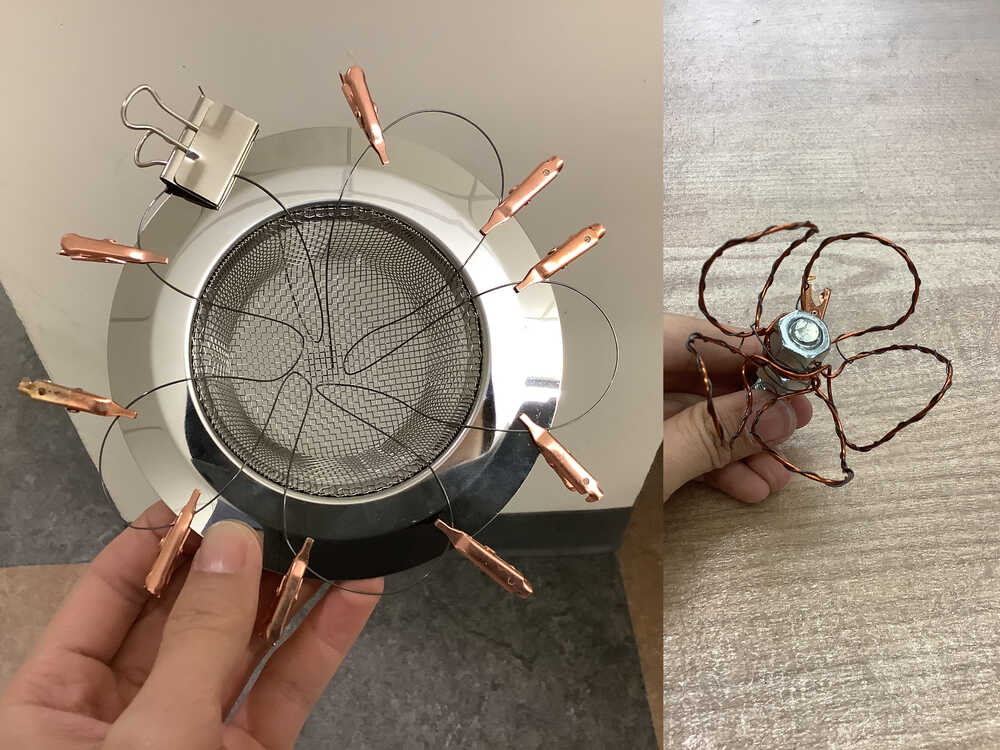
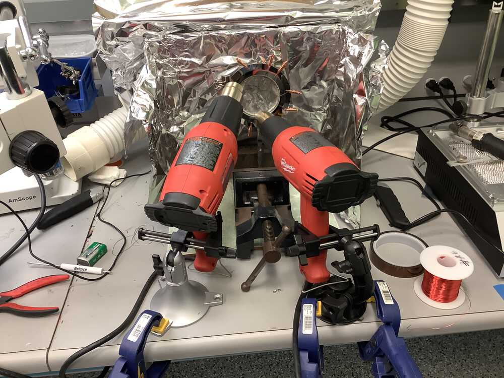
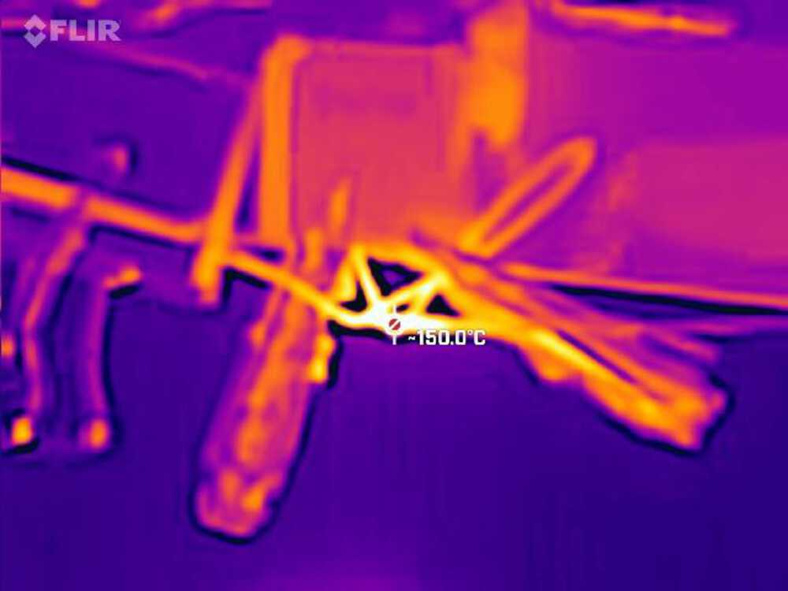
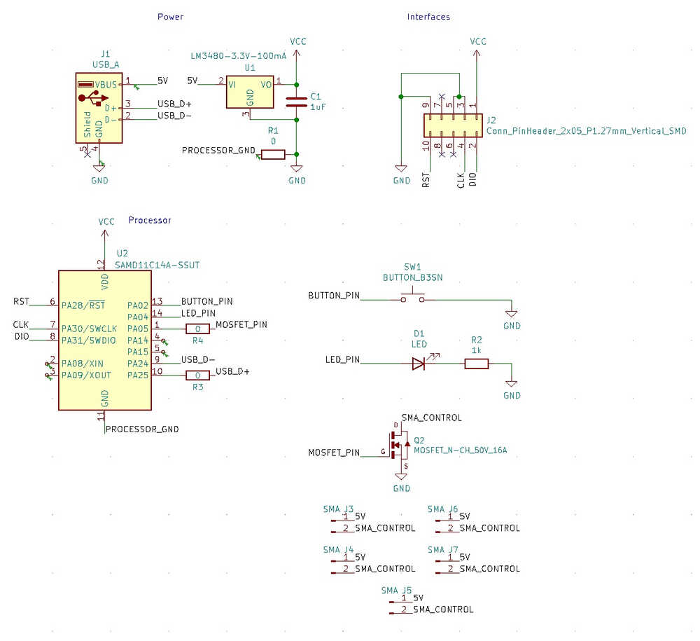
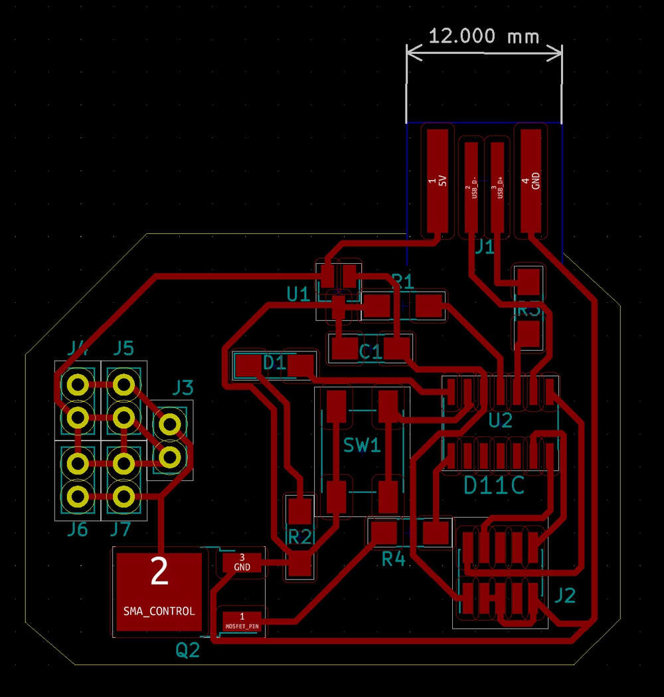
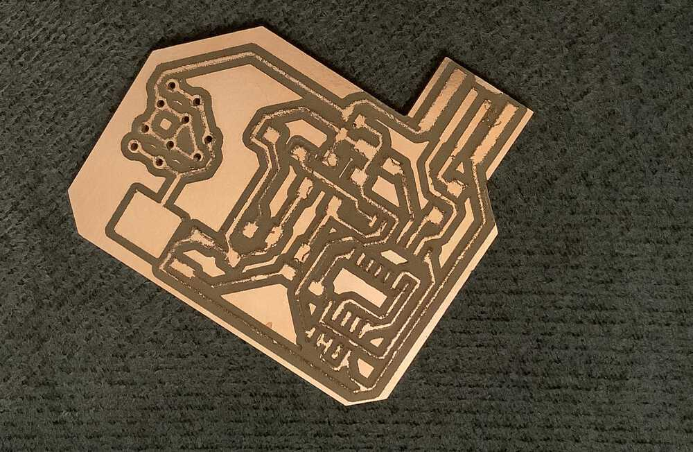
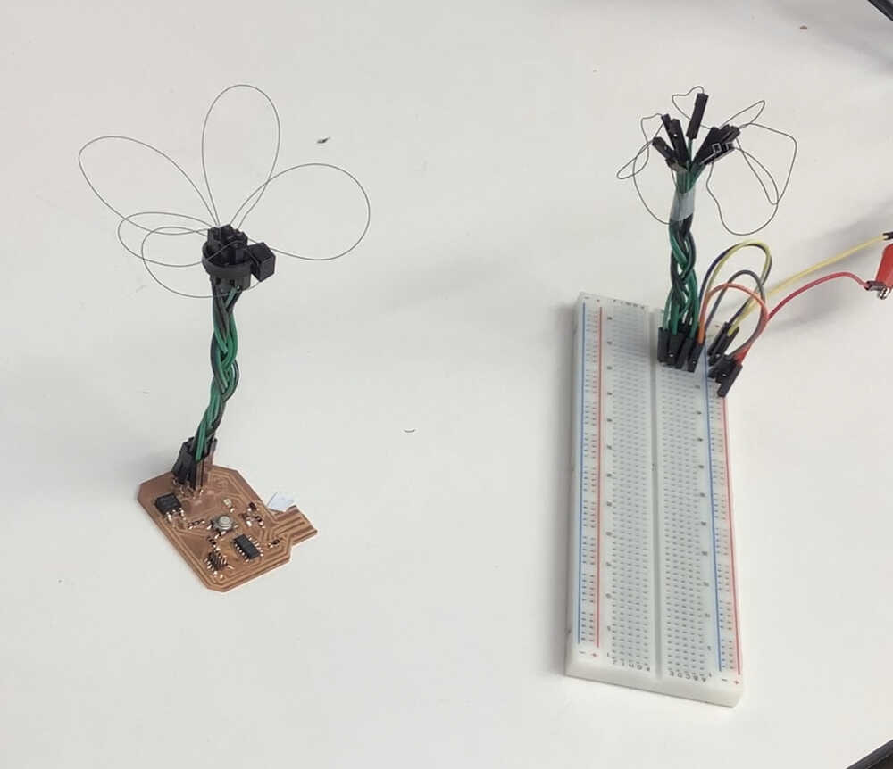
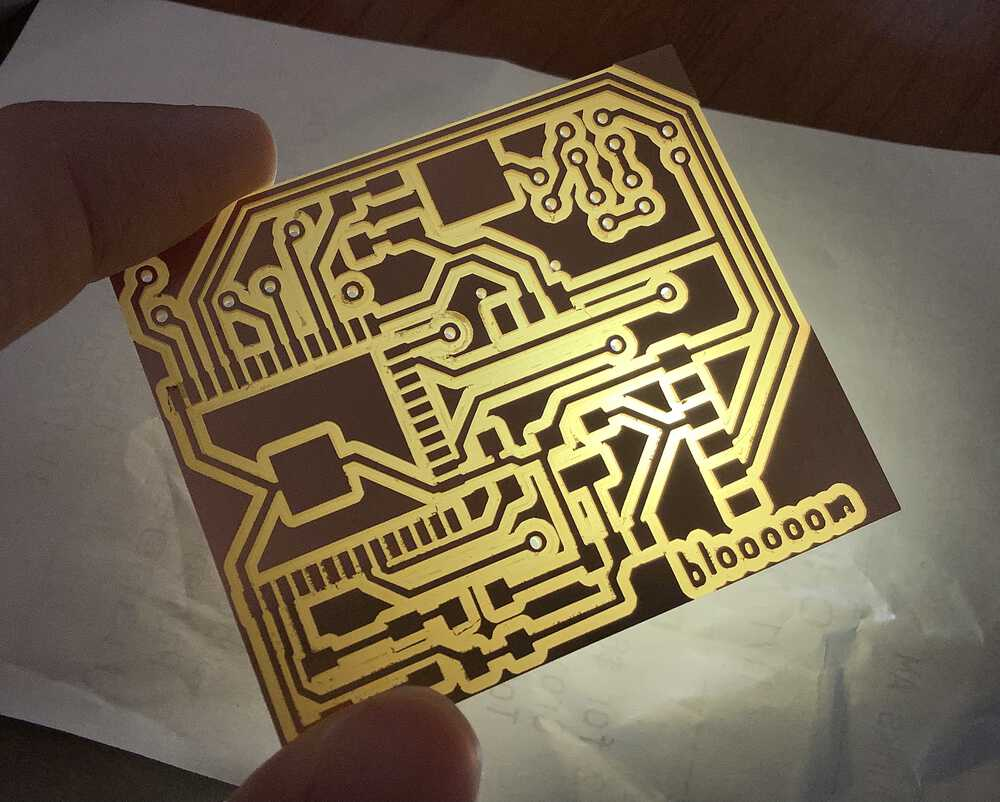
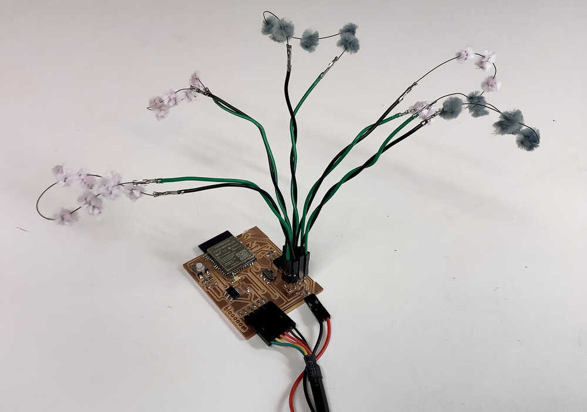
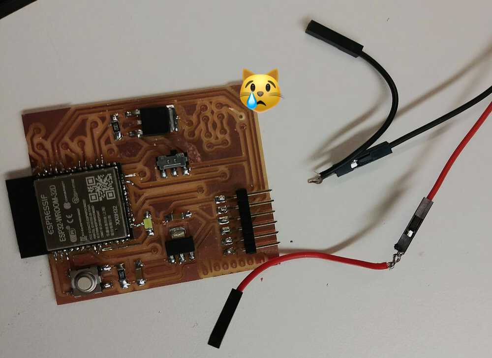

Nov 3, 2021
Assignments
1. Output device
Disclaimer: I started working on this project on Oct 27, 2021, before hearing Neil’s advice to stay away from SMA 👀
After hearing Neil’s warning, I spoke to Jack about his experience with SMA and he mentioned that fishing line actuator would allow more precise length changes, but would typically be used to pull an external structure, like he did here. Since I was going for qualitative movement and I wanted the wires themselves to form flower petals, I decided to venture forth with my experiment.
I have been very curious about shape memory wire for some time, so I also wanted to make a board that can be used to actuate nitinol wire like a blooming flower.
SMA training
To start, I tried to train the wire to form a petal shape. This involved bringing the wire up to 500°C for ten minutes. I tried different arrangements attached to various metal paraphernalia to see what would work best.

However, my makeshift oven set up at the EECS shop was not able to control temperature very well. One hot air gun was insufficient to bring the temperature up to spec, so I used two (making sure to connect to different outlets). The aluminium foil helped to contain heat, but sometimes worked a little too well, and it also made it more difficult to regulate the temperature and keep an eye on progress. Moreover, the multimeter thermometer is not suited for such high temperatures and the cable would brown if held near the heat for an extended time. Special thanks to Anthony, Carson, and Jax, for bearing with the heat while I experimented!

I also tried to use a thermal camera to track the temperature, however this again was limited.

Here after “training” the wires were connected to 5V (max 1A) to simulate USB power.
This wire had to be nudged for it to overcome tension:
In the above two cases the wires did move… but not back to their exact previous forms as desired. Besides the lack of oven temperature control, I found that complex shapes were difficult to re-inflate bceause of their internal tensions and underconstrained nature after being released from their “molds”. Creating one petal at a time worked better.
I designed a PCB that will be used to create a blooming flower. An N-channel MOSFET is used to conect each of the 5 petals in parallel to 5V.
 
Sadly the Roland machine failed me as the traces look scraggly and broken in places. Maybe the end mill had gone dull?

Eventually, I was able to mill and stuff my board :) Nitinol is not amenable to soldering. I tried scraping it and using the shop’s flux, but to no avail. To attach it to the flower, it is possible to use jumper cables. Eventually for added robustness, I removed the plastic from the jumper and crimped the ends (shown later).

Parallel failure
During my tests, I had tested one petal at a time, and assumed that I could arrange all the petals in parallel as long as the SMA was the same length. I thought this was a good strategy so that in case one petal came loose, the others would still work.
However, after arranging 5 petals together, I encountered a strange phenomenon where only one or two petals would actuate. Interestingly, the SMA has varying resistance, which drops drastically (25kΩ to 2Ω) when it returns to “trained” state, which would then prevent the other petals from actuating.
Series success
Arranging the petals in series fixed this issue.
Power consumption
I set the power supply to a current limit of 1A and increased the voltage upward till the SMA actuated. I discovered that the optimal voltage was 8V, and the SMA consumed 0.8A. \(P = V \dot I = 6.4W\)
The lab had power supply wall adapters of 12V 1A, so I would need to do PWM to achieve the right voltage.
A new board
Armed with this knowledge, I needed to design a new board. I decided to use an ESP32 so that I can continue working on this during networking week.


I also made pinouts for some usable pins on the ESP32 for future use.
blooooom pcb:
 Files are in resources.
SMA aesthetic
I experimented with different ways to make the petal more visible.
It is possible to fill the petal with tacky PVA glue, like this (nail polish is being added on top of the dried glue):
 Source: Always Arty
Source: Always Arty
However, this would make the SMA too rigid to move.
I tried to use flexible fabric glue, but it did not spread the same way as tacky PVA glue. I have obtained some materials and will try to experiment with a semi-slime glue next.
I also tried to wrap pipe cleaners around the SMA, but this also constrained its movement significantly.
Eventually, I went with DIY pom poms to create a cherry blossom-esque aesthetic.
 Source: Walmart
Source: Walmart

I realized it looks more like these flowers:
 Source: Wikipedia
Source: Wikipedia
They are commonly known as pussy willow but I prefer the name of the botanical structure catkins.
PWM
I connected my board to the oscilloscope to check that it was correctly producing an output from the PWM.

I checked my manual calibration function for selecting the right PWM to actuate the SMA using the 12V 1A wall adaptor.
void manualCalibration() {
if (Serial.available() > 0) {
int x = Serial.parseInt();
if (x >= 0 && x <= 255) {
ledcWrite(mosChannel, x);
Serial.println(x);
}
else {
Serial.println("wrong value");
}
}
Serial.flush();
}
Putting it together
Yay! The SMA actuates when power is connected, and again when power is removed, but in a reverse motion. I like how eerie the movement feels, as though time is being reversed when the power is shut off.
Code (values are calibrated as described above):
const int mosPin = 16;
const int freq = 5000;
const int mosChannel = 0;
const int resolution = 8;
void setup() {
ledcSetup(mosChannel, freq, resolution);
ledcAttachPin(mosPin, mosChannel);
}
void loop() {
ledcWrite(mosChannel, 155);
delay(9000);
ledcWrite(mosChannel, 0);
delay(9000);
}
3. Input device
I made a banana capacitive touch pad 🐒
This can be connected to the SMA flower, so that it blooms when the banana is touched. In the future, I can network two flowers so that touching one banana (or other capacitive extension) would actuate another flower remotely.
Notes to self / future improvements
- If cutting and milling holes in a PCB using Mods, separate holes and edge cuts into different files, and do the holes first. This prevents the board from vibrating around after the edges are cut, which results in wobbledy holes.
- Test all components together to avoid unexpected problems like varying resistance in a parallel circuit.
- Add more structure to the flower (e.g. 3D printed holder, or a resin core) to prevent exposed metal areas from shorting.
- Think you’re being gentle with the PCB? BE GENTLER. I fractured several pads during soldering and had to fix it by dragging solder over the broken pad.
- Check the power supply! If the jack is not well designed, you may need to roll it around till it properly connects.
- During testing, I connected the SMA for too long and may have retrained it. This resulted in some torsion when I rearranged the petals. Avoid this!
- Move the
prog runslider on the pcb so that it is not so near the petals, which makes it difficult to access. Also, find the right footprint for the slider so that it can be more mechanically stable. The footprint from the fab library currently has holes that are too far apart, so I had to snip off the nubs from the bottom of the slider and use some glue to hold it down instead. - Think about portability ahead of time. I tried to MacGyver an extension from my 12V wall adapter to the 3.3V regulator so that my ESP32 could be free from the FTDI power source, and ended up fracturing another pad (see photo below), so I gave up. It would have been easier to build it into the PCB design.
